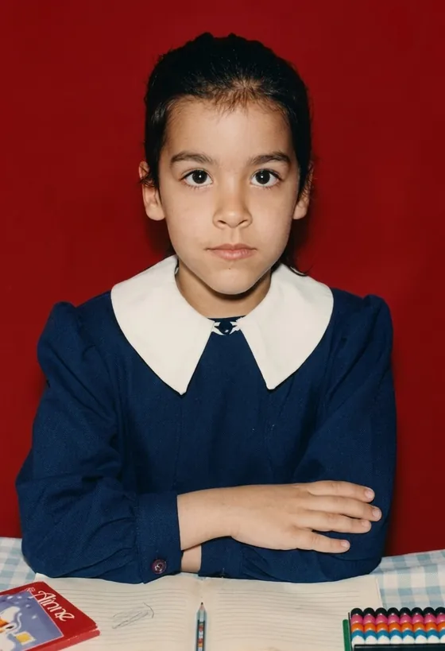

HOŞGELDİNİZ

Girmek İçin Tıklayın
! Bu site yapım aşamasındadır !
Bu site 800x600 çözünürlükte en iyi görüntülenir.
Her Hakkı blogmlog'a Aittir

Girmek İçin TıklayınBu site 800x600 çözünürlükte en iyi görüntülenir.
Her Hakkı blogmlog'a Aittir